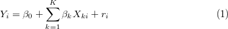
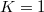
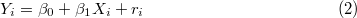
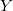
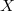
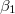

| SPSSによる統計的データ解析入門 |
| SPSSによる統計的データ解析入門 |
ここでは，相関分析に続いて回帰分析を取り上げる。 回帰分析とは，一般に以下のようなモデルをデータに当てはめる分析のことである。
|  | (3) |
特にのときの分析，すなわちモデルとして
|  | (4) |
を考えるときの分析を単回帰分析という。ここでは，単回帰分析のみを扱う。 1
相関係数も単回帰分析も2変数間の関係を扱っていることに代わりはないが，単回帰分析では2変量の間に説明・非説明の関係があることに注意されたい。 すなわち，式(4)のモデルでは「変数の個人差」は「変数の個人差」＋「説明できない誤差」で表されている。 このとき，説明される変数（）を非説明変数（従属変数・基準変数），説明する変数（）を説明変数（独立変数・予測変数）と呼ぶ。
ここでは，国語の成績を英語の成績によって説明する単回帰分析を実行する例を提示する。
まず，メニューバーから[分析]-[回帰]-[線形]を選択する。 2
「線形回帰」ウィンドウが立ち上がる。
ここでは国語の成績を英語の成績によって説明するのであるから，国語の成績が従属変数，英語の成績が説明変数である。 よってそれぞれの変数を左から選択して右のボックスに移動させる。 3
[OK]を選択するとSPSSビューアが立ち上がり，結果が表示される。
ここで示したのは，出力された結果の一部である。
「モデル集計」では，モデル全体の説明率が表示される。 “R"を「重相関係数」と呼ぶ。この2乗（“R2乗"）を「決定係数」と呼ぶ。 決定係数は従属変数の散らばりのうちどれだけの割合を説明変数によって説明しきれたかを示すものである。この分析例の場合，3割強程度しか説明できていないことになる。 残りの7割弱はこのモデルでは説明されず残っているということである。 通常の研究では，この決定係数を上げるべく他の変数を投入して新たなモデルを作り，重回帰分析に持ち込むなどの手段をとることが多い。
「係数」では(4)式で示した（切片と呼ばれる）と（回帰係数と呼ばれる）の推定結果が表示されている。 推定値は“B"の欄に表示されており，その隣には対応する標準誤差が表示されている。右端に有意確率が表示されている。この場合，有意確率は.000となっているので5%水準でも1%水準でも有意である。 すなわち，切片・回帰係数それぞれについてその母集団値がゼロであるという帰無仮説は棄却される。
相関係数を算出したときと同様，回帰分析においても2変数間の関係および推定された直線（回帰直線という）をグラフで確認しておくことは重要である。 ここでは，回帰直線を含めた散布図を書く方法について説明する。
[グラフ]-[インタラクティブ]-[散布図]と選択する。
「散布図の作成」ウィンドウが立ち上がる。 上のほうの空欄に従属変数である「国語得点」を，下のほうの空欄に独立変数である「英語得点を」ドラック＆ドロップで挿入する。
同じウィンドウで「当てはめ」タブを選択し，「方法」から「回帰」を選択し，[OK]をクリックする。
SPSSビューアが立ち上がり，推定された回帰直線が引かれた散布図が示される。
Footnotes
| SPSSによる統計的データ解析入門 |